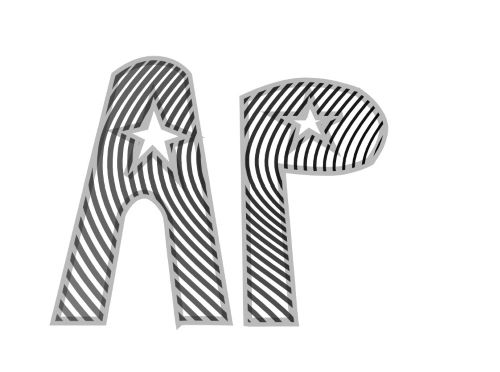
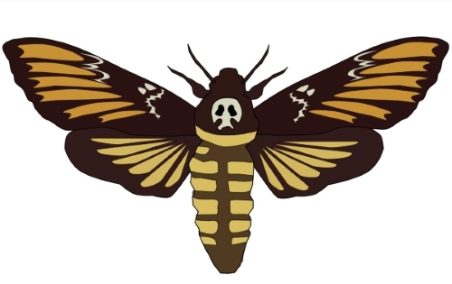
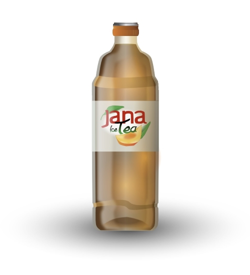
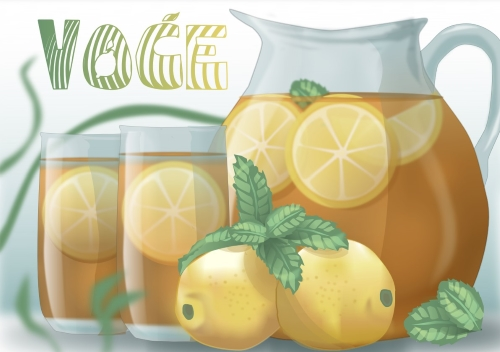
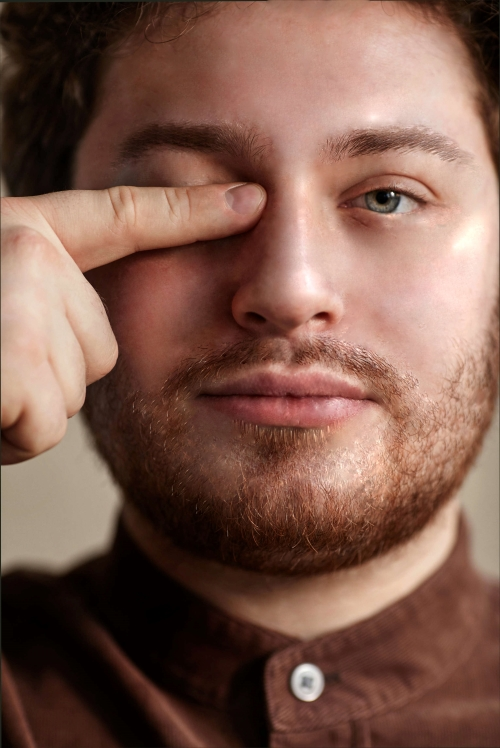
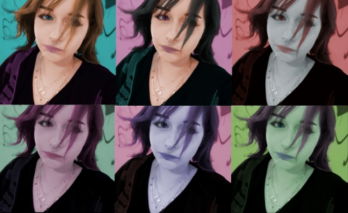
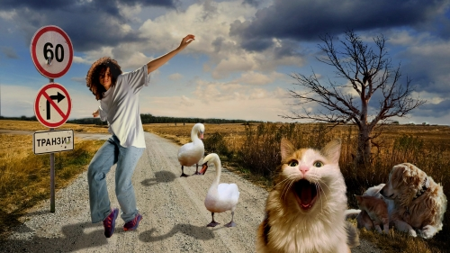
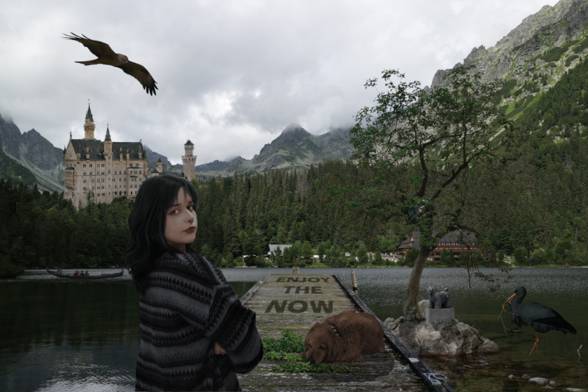

Zadatak je bio koristeći vlastiti font s prošle vježbe u Inkscape-u ispisati inicijale, od njih napraviti masku koju smo zatim ispunili blendom, tj. interpolacijom napravljenom između dvije krivulje kojima smo prije definirali svojstva poput boje.

3. VJEŽBA - BOJA, TRANSFORMACIJE - INKSCAPE
Trebali smo izvesti vlastiti primjer sa multipliciranim objektima nacrtanima sa alatom Pen. Na kopiranim oblicima koristili smo rotacije, scale, transparenciju, multipliciranje itd. Mogli smo objekte crtati po odabranoj slici predloška ili slobodno bez predloška.

4. VJEŽBA - GRADIJENTI, TRANSPARENCIJA - INKSCAPE
U vježbi se obrađuje tema izrade složenih objekata koji se sastoje od više staza metodama spajanja (Unite/Compound path) ili oduzimanja oblika (Difference/Subtract).
Apliciranje različitih vrsta gradijenata (linearni, radijalni, mesh...) od dvije ili više boja.
Transparencija i poredak slojeva u izradi složene grafike.

PROJEKTNI ZADATAK 1
Koristeći sve do sad stjećene vještine trebalo je iscrtati sliku prema zadanom predlošku te kreirati vlastiti font kojim smo morali ukomponirati riječ VOĆE u finalni rezultat.

PIKSEL GRAFIKA
5. VJEŽBA - RETUŠIRANJE - GIMP
Trebalo je uz primjer retuširati i još jednu odabranu sliku.

6. VJEŽBA - KOLORIRANJE - GIMP
Trebalo je uz primjer kolorirati i sebe više puta te posložiti slike u kolaž.

7. VJEŽBA - FOTOMONTAŽA - GIMP
Glavni cilj fotomontaže je kombiniranje više fotografija izrezivanjem dijelova različitih slika i spajanjem u jednu cjelinu. Pritom je najvažnije kvalitetno selektirati dijelove koje želimo izrezati kako bi se što bolje uklopili u finalnu sliku. To smo uz različite tehnika selektiranja objekata i trebali napraviti u ovoj vježbi.

PROJEKTNI ZADATAK 2
Koristeći sve do sad stjećene vještine trebalo je napraviti fotomontažu sa svim zadanim elementima.

VIDEO/WEB
8. VJEŽBA - CINEMAGRAF - DAVINCI RESOLVE
Trebalo je uz primjer napraviti i vlastiti cinemagraf.
9. VJEŽBA - VIDEO OBRADA - DAVINCI RESOLVE
Morali smo uz primjer s videa napraviti i svoju vlastitu obradu videa po izboru.
10./11. VJEŽBA - WEB STRANICA U HTML-U I POSTAVLJANJE NA GITHUB
Cilj vježbe je bio po uzoru na onu u videu napraviti vlastitu web stranicu te je uploadati.